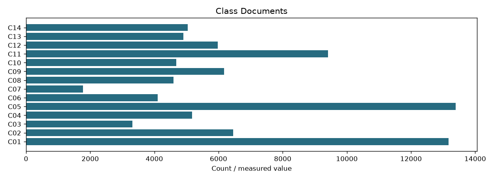

| schema | category-postings-v2 |
|---|---|
| index_fingerprint | 6243a1e92060be87bf31c54ccd305fb375d9d3482a75b317b51886ef24f198cf |
| classifier_sha256 | 7895b17e9113c09c0a5486e1b0be269445bf2d42fba83c84d940837c3bf3ae33 |
| default_top_classes | 3 |
| documents | 68414 |
| class_documents | {'C01': 13169, 'C02': 6453, 'C03': 3317, 'C04': 5180, 'C05': 13392, 'C06': 4098, 'C07': 1778, 'C08': 4597, 'C09': 6175, 'C10': 4685, 'C11': 9417, 'C12': 5971, 'C13': 4901, 'C14': 5045} |
| meaning | Configurable category pruning; no relevance-retention guarantee |
